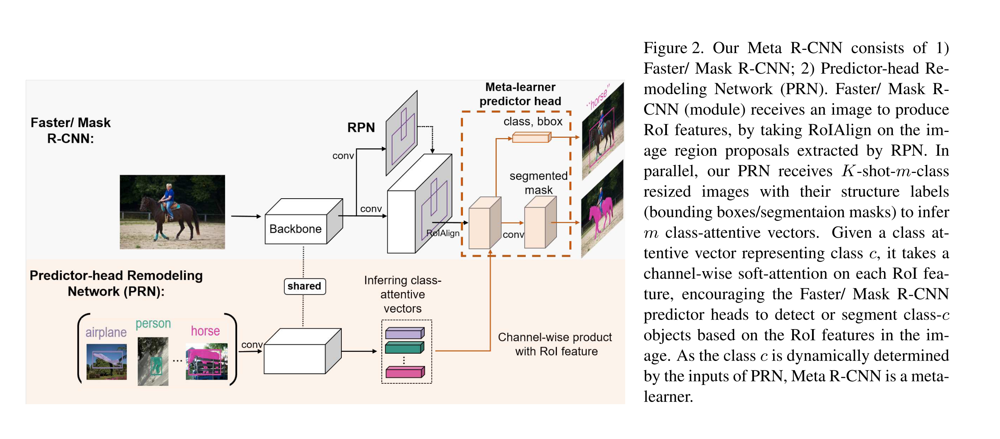

URL: https://arxiv.org/abs/1909.13032
ICCV 2019的论文，论文标题比较直白，meta learning + Faster/Mask RCCN做物体检测/分割。作者在论文里强调了few shot场景下物体分类和物体检测的差异，物体分类通常对全图做，物体检测由于全图有不同的多个物体所以并不适用，那么自然而然的就想到在ROI后面做。那么论文就想办法把meta learning的机制融合进two stage的pipeline里面。

论文所提的网络结构也比较简单，首先保留了Faster/Mask RCNN的整个pipeline，在此基础上增加了一个Predictor-head Remodeling Network(PRN)子网络，这个自网络也是这篇论文的主要贡献所在，出发点的话和很多的few shot的论文很类似就是想办法增强网络对于不同类别的区分度，手段也是一样的就是各种atttention。PRN的作用呢也是用来学习不同class的attention编码(class-attentive vectors)。这个编码和同是ICCV2019论文的feature reweight方法的不一样点是那篇论文最后学的是channel attention，每一个channel代表一个类，以此来增强某一个或某几个channel，而这篇论文学的是对于给定类别的roi feature学习类内每个channel的权重，所以PRN输出是固定长度的vector代表每个类别对应的attention。
论文整体的结构就是这样，主要需要注意的应该是模型的过程了，首先模型训练的时候还是会遵循一般meta learning的策略，构建C way k shot的数据集，support集 Dtrain 和 query 集Dmeta,其中Dtrain作为Faster/Mask RCNN的输入，Dmeta作为PRN的输入，这样两者联动同时加上Losscls / Lossreg / Lossmeta来共同监督网络的训练。Lossmeta用的是ce loss.
至于在最后的inference可以采取和feature reweight那篇论文一样的策略，class-attentive vector可以根据已有数据直接预处理得到就好。